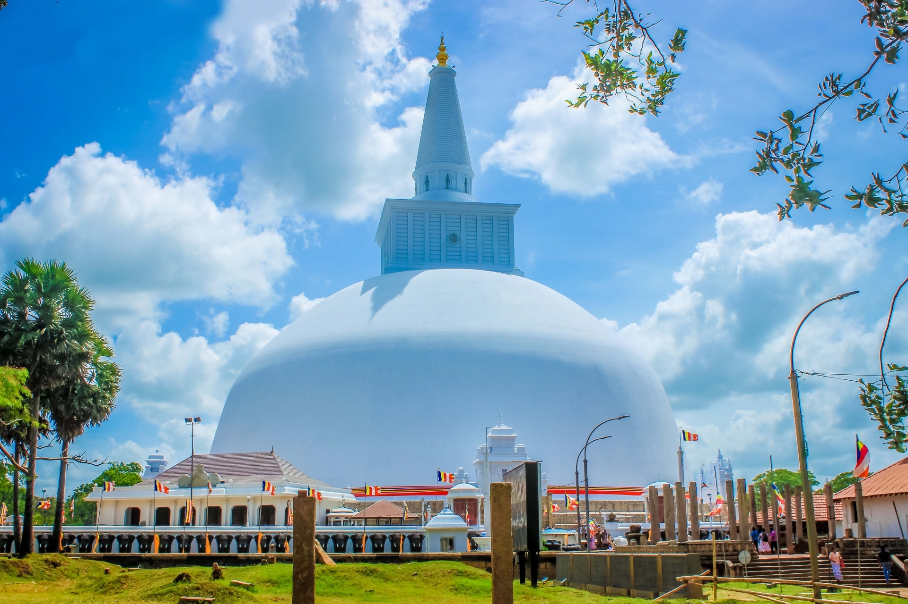

Religion in Sri Lanka
Religion

Buddhism covers more than 70% of people as of 2012.This is also considered as the state religon of Sri Lanka and has been
given special priviledges by the governement to protect and serve the buddhist dharma for the future generations.
Theravada buddhism is the official religion in the country.
Anuradhapura,Polonnaruwa and Kandy are the main hotspots of Buddhism. They are associated with rocks,stupas and temples
which are of high importance and value to this religon.
Christianity covers about 7.4%, Hindus a 12.6% and Islam near 9.7% of the total population in Sri Lanka.
Cathlolicism was said to be introduced by the Portuguese during their invasion in 1505.Today, there is a Roman Catholic
archbishop and 11 Roman catholic archbishops throughout the country.
Hinduism is said to be the oldest religion in Sri Lanka.Throughout the island, there are various places of worship with a touch of cultural diversity.
THe most prominantnt places of worship are,
- Naguleswaram in the North
- Ketheeswaram in the North west
- Koneshwaram in the east
- Muneshwaram in the west
- Tondeswaram in the south
Islam is said to be originated from the Arab traders which came to Sri Lanka in 7th century A.D.
Today, several places of worship and intrest are available in Sri Lanka.
Culture

Sri Lanka is home to a very diverese culture which is highly influeceed by theravada buddhism.
Sigiriya is a famous example for Arts and crafts in Sri Lanka. Religious paintings are found in Dambulla and temple of tooth relic in Kandy.
Likewise, Kandyan Dancing is a unique dancing style which is prevelent from early days.